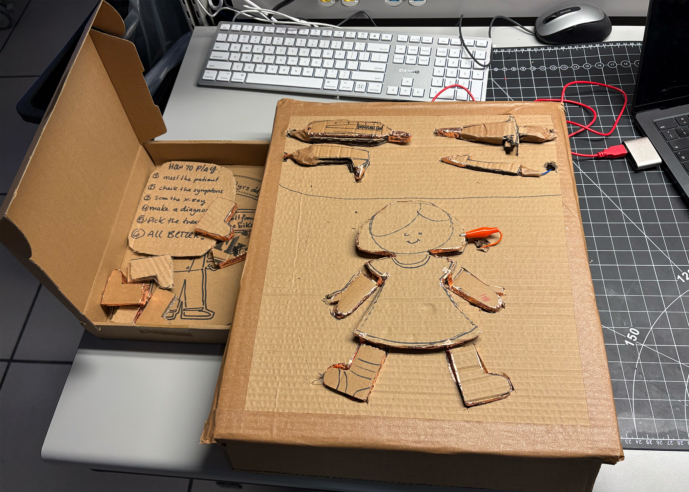
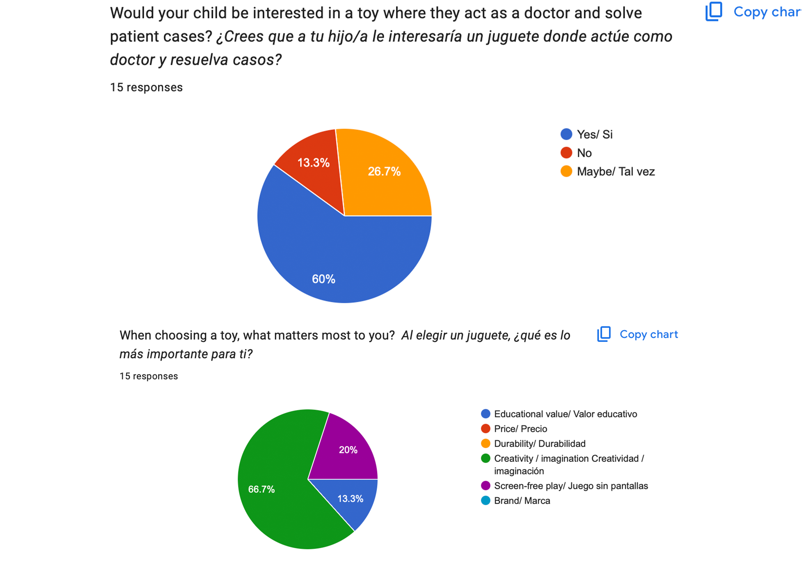

Special Topics Module 2
Research & Activity Documentation
Monserrat Cardenas
Project 2
Module 2
Ideation for an interactive doctor kit that combines laser cut, Arduino and AR to create a learning toy. It is a role-play toy were kids play as doctors, to discover their passion for medicine and the procedure to cure a patient.
Activity 1
Activity 1 Testing board.


Activity 2
Activity 2 AR testing
![I created basic images with different compositions to test how the AR visuals should appear. The first option does not use an X-ray and instead shows a simple animation. The second option presents a clearer composition for displaying the X-ray, which helps communicate the diagnosis more effectively. I am also considering adding notes in a different way and experimenting with alternative text layouts. I may include secondary images that explain how to treat the condition and provide clear instructions for the player.](images/Activity2/web1.png)


Project 2
Project Concept
My little doctor kit is an interactive toy that combines laser cutting, Arduino, and augmented reality (AR) to create a learning experience for children. The toy is designed as a role-playing game where kids can play as doctors, discovering their passion for medicine and learning about the procedures to cure patients.

Testing Action Research
Testing different points as technology and what I need, and my audience and their needs.

![From peer feedback, I've learned what is my next steps for project 3. I’ll begin with redesigning the board in a way that the tiy is visually aesthetic, use other toys as example. Work on Arduino and the sounds. Test the design again until its ready to launch. I feel the feedback helped me understand the ideas of letting the AR as a secondary option, think more about the box and the accessibility and UX ( affordability and triggers of the game). The primary research made me understand that the role play game, might need a goal and a task to make it more fun. The peer feedback was short and I wished I had more critique, during classes I will pull my design to get feedback more often to create a good work for the final submission.](images/EarlyResearch/web10.png)

Research Reflection
The project has not been what I expected I am scared of not having the ideal final design. I feel every project in physical computing have helped me to prepare for doing my own project, but now I feel kinda stuck on the process, I do not know if this project is what they are looking for, in the industry. This project will help me show variety. I will have to change reality composer with other software as it doesn't let me share a QR code for testing.
Next Steps
From peer feedback, I've learned what is my next steps for project 3 prototyping. I’ll begin with mid fidelity for AR. Test the Arduino. Once the interaction feels ready to test, I will ask for feedback from peers during some classes, and continue levelling up the prototype following the action research. From the feedback I will focus on: Creating the graphic design and colours. Laser cutting and wires integrations.
Powered by w3.css